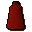
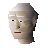

Robe of zamorak

| Config name | zamrobebottom |
| Item id | 1033 |
| Value | 30 gp |
| Weight | 2lb |
| Members | Yes |
| Tradeable | Yes |
| Stackable | No |
| Equip slot | legs |
| Options | Wear |
| Defined in | scripts/_unpack/225/all.obj |
| Equipment stats | Magic att 2, Magic def 3, Prayer 3 |
Robe of zamorak
A robe worn by worshippers of Zamorak.
Dropped by
| NPC | Level | Quantity | Rarity | Via | Notes |
|---|---|---|---|---|---|
 Iban disciple | 13 | 1 | Always | ||
| 26 | 1 | 1/32 (3.12%) | |||
| 65 | 1 | 1/32 (3.12%) |
Quests
Referenced in scripts
scripts/drop tables/scripts/necromancer.rs2scripts/minigames/game_trail/scripts/hard/zamorak_wizard.rs2scripts/quests/quest_upass/scripts/iban_disciple.rs2scripts/quests/quest_upass/scripts/quest_upass.rs2